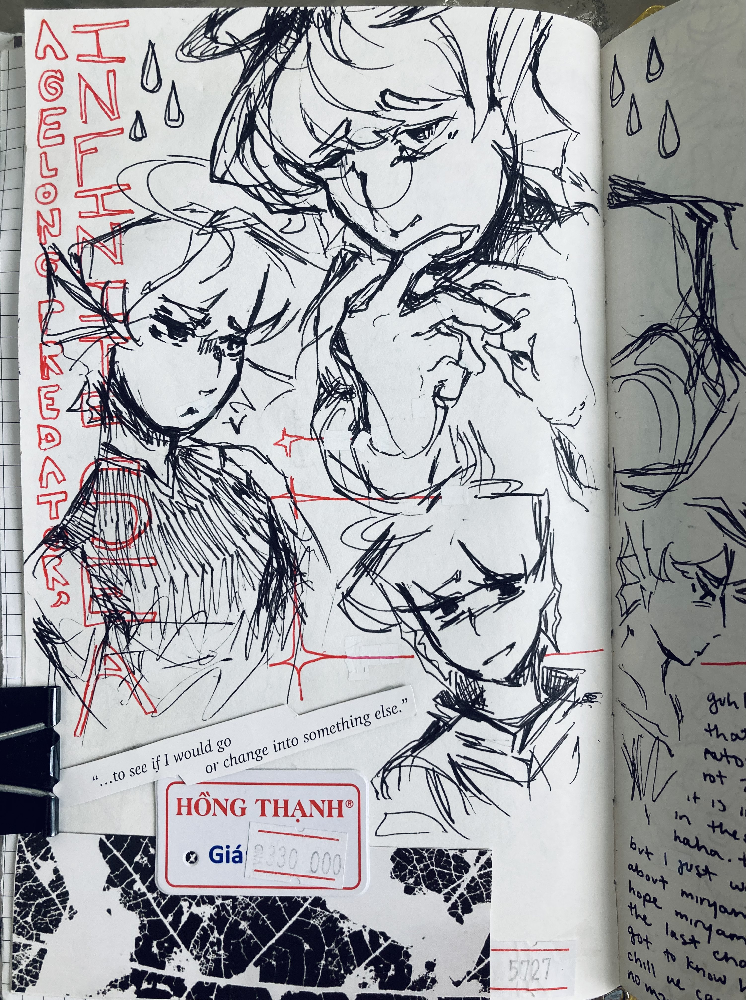

agelong
creation date: march
character featured: enzo
dsfdsfasd my favorite page spread. i drew it soon after an exam as a stress-reliever & so intended for a more free-form loose and flow-y linework to get out tht emotion. suprisingly it ended up looking real nice imo
to the left is a vague reference "on the quiet" by one leg mary. please listen to the album pleasepleaseple
characters featured: tamari & miriyam [from qualia automata]
i was going thru huge brainrot for the song series, qualia automata at this time. ive never been so excited for the release of a song ever tbh. hhhhh still on the edge of my seat for part 4's release

OK A SLIGHTLY UNRELATED TANGENT ON QUALIA AUTOMATA:
my favourite character's tamari, but i'm more interested in miriyam, mainly bc i think they have a lotta potential. as much as i love the song and its plot tho, end-world normopathy ended up focusing more on miriyam's relationship with tamari, and so i feel like i have a limited understanding on miriyam as a person. so i really hope the next one goes more in depth with their own goals. like i GET her being an emotionless and sheltered android is the point of her character, but i wanna see more of her !!! especially now that they've experienced some level of emotions now. GUHHHHHH i really hope they get their time to shine.... bc i wrote in the drawing too that i'm afraid they're gonna die in part 4. the extra lore blurb on team 6x111's website gave her so many death flags mannnnn ;o;